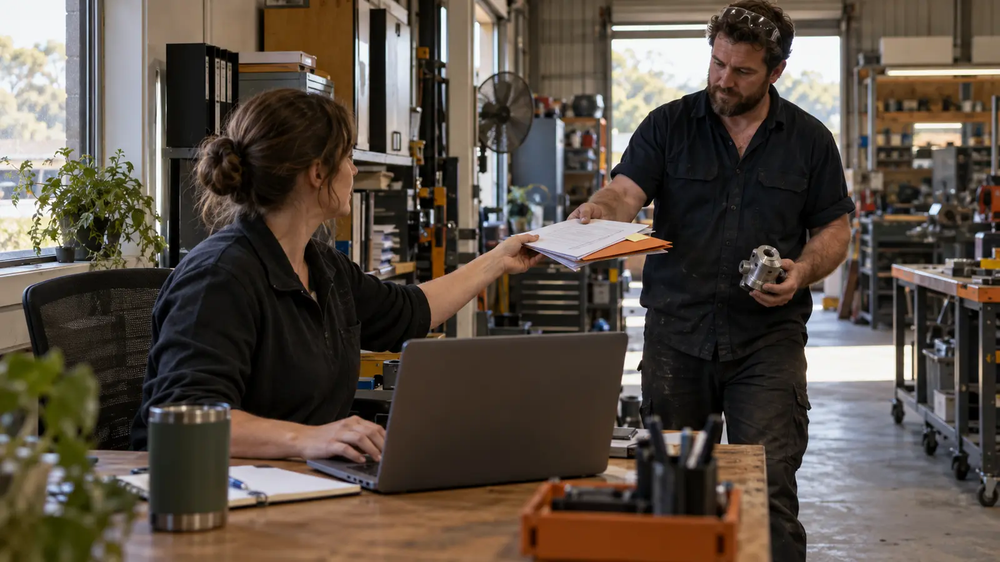

Meet your colleague.
Choose a name, personality and broad role. We arrange email, Teams and appropriate access with your IT team. Introduce it to the people it will work with.
How it works
Ask about a product, check a process or pick up an earlier decision. Your colleague answers from what it has learned, asks when something is unclear and keeps its understanding current. FUSED sets up and manages the service.

Your starting point
Sales, administration or helping people find answers: a broad starting role is enough. FUSED helps with the details as your colleague gets to know the business.
Choose a name, personality and broad role. We arrange email, Teams and appropriate access with your IT team. Introduce it to the people it will work with.
Use it for answers about the business while it researches, asks questions and checks its understanding. Relevant emails and Teams conversations help it keep up as things change.
Request a skill or consider its suggestions. We agree the work and fees, build and test the skill with you, then support it in use.
Start with what you have
You do not need a finished knowledge base. Choose someone who knows the work and a few reliable sources. FUSED agrees the initial focus and your team’s input; the colleague helps find the gaps and asks the next questions.
In the tools your team already uses
Email it directly, copy it into a relevant thread or include it in an agreed Teams conversation. It picks up context, asks when something is unclear and uses what it has learned next time.
Delivery dates need Priya’s confirmation. Next-day dispatch is not a guarantee.
Illustrative FUSED learning record · Source: your confirmed reply03 / With a document-update skill
The same delivery example, with document and website connections added.
NOVA flags the website’s next-day claim and asks the responsible owner to review the delivery procedure.
“Delivery dates need Priya’s confirmation. Next-day dispatch is not a guarantee.”
The document owner reviews the revisions and effective date.
The connected procedure and webpage are updated. Authorised sales staff are notified. NOVA uses the current guidance; earlier versions and approvals remain in the record.
Illustrative FUSED workflow. Connections, approvers, access and publication rules are agreed for your skill.
“We keep seeing similar product questions. Could I help collect the details and handle the replies? FUSED could build that skill with us.”
You choose what comes next. FUSED designs, quotes, builds and supports each skill with you.
Illustrative conversations and memory record, not a live demo or a built-in Microsoft feature. FUSED configures the learning service and connections for your environment. See how it fits your business.
Put a face to the idea
See an example colleague’s working style, what it would learn about your business and how it could answer a question in Teams.
Meet your example colleagueThe first few weeks
Allow around two weeks for initial learning on a focused role, with your people and information available. Your colleague researches and asks; your team fills in the gaps; FUSED checks its understanding with you. We test what it knows before agreeing it is ready.
A self-learning cloud colleague
It researches your business in depth: your products and services, industry, competitors, unique positioning and public social content. It revisits that picture as the business refines its offer, changes direction or responds to the market.
Through email and Teams, it captures decisions and their reasons. It checks whether a change is a standing instruction or an exception, what it replaces and who may be affected. Recurring gaps become suggestions for improvement.
We agree what it can read and how often it should check for changes. It can remember decisions automatically under those rules, and asks you to confirm important or unclear changes. It keeps outside research separate from your instructions and only shares information with people allowed to see it.
Learning more does not grant permission to do more. New skills, systems and responsibilities still need to be agreed with you.
Clear authority
Each new skill starts with its own tests and reviewed work. You decide which routine actions it may handle once the results support it. Some work can always stay under review.
After launch
We maintain the connections, monitor whether work completes and help when something goes wrong. As your business changes, we review the service with you and agree improvements. Affected work can be paused or returned to review while we check a fix.
Check that jobs finish, the right people receive the results and records stay up to date.
Spot repeated problems and things that still need an answer.
Agree important changes to the role, permissions, systems or instructions.
Use recurring problems to improve how the work gets done.
Practical questions
One useful conversation
Tell us about your business. We’ll help you find a first role, explain the service and give you a clear proposal before you decide.